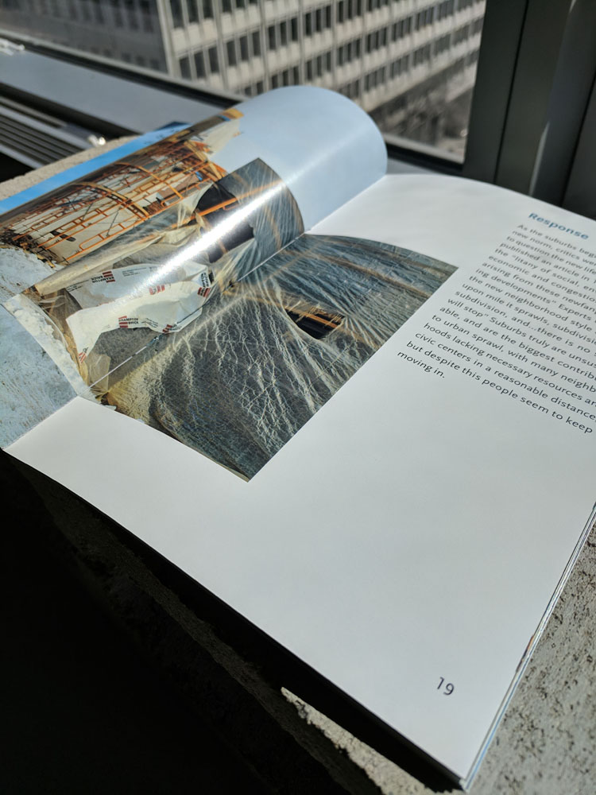
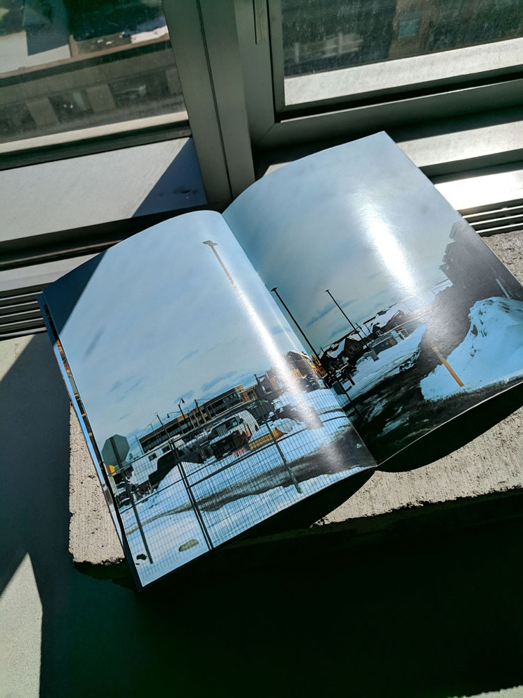
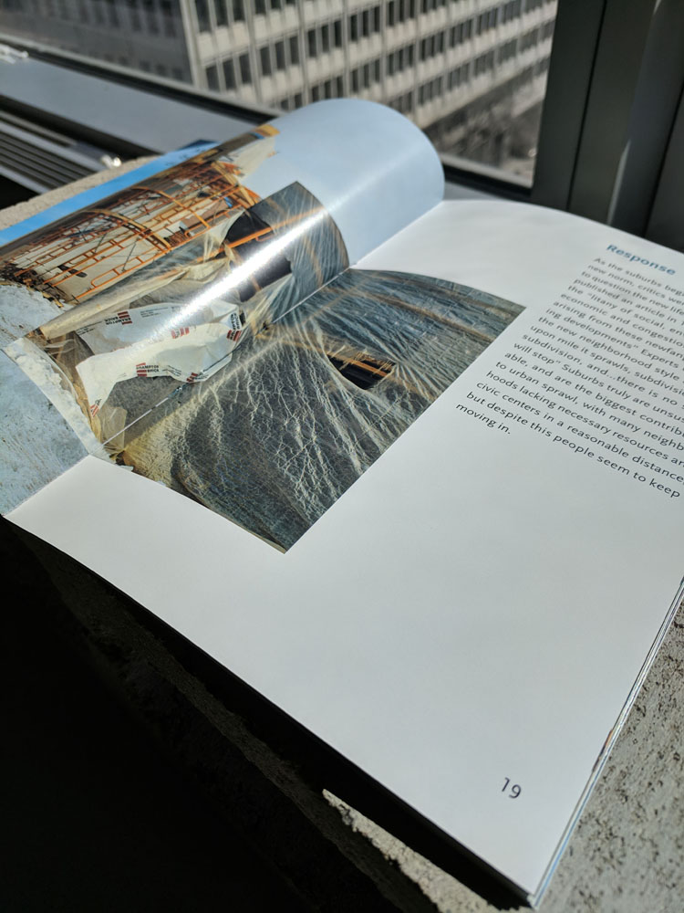
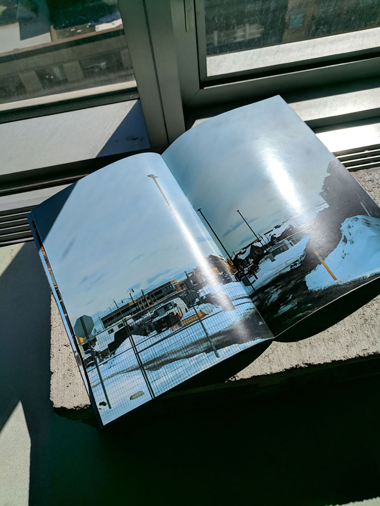
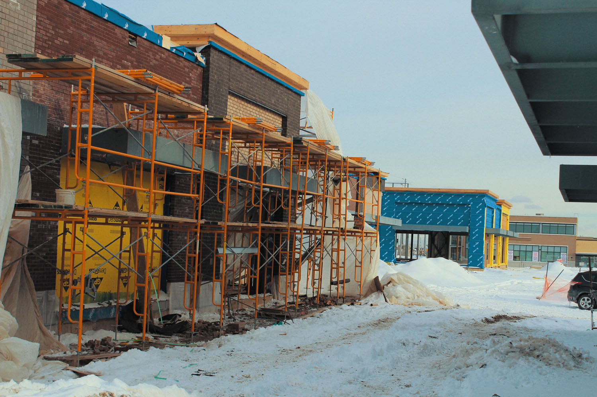
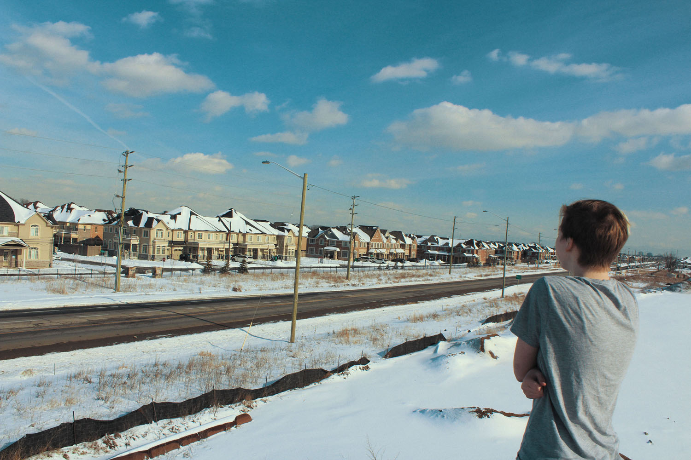
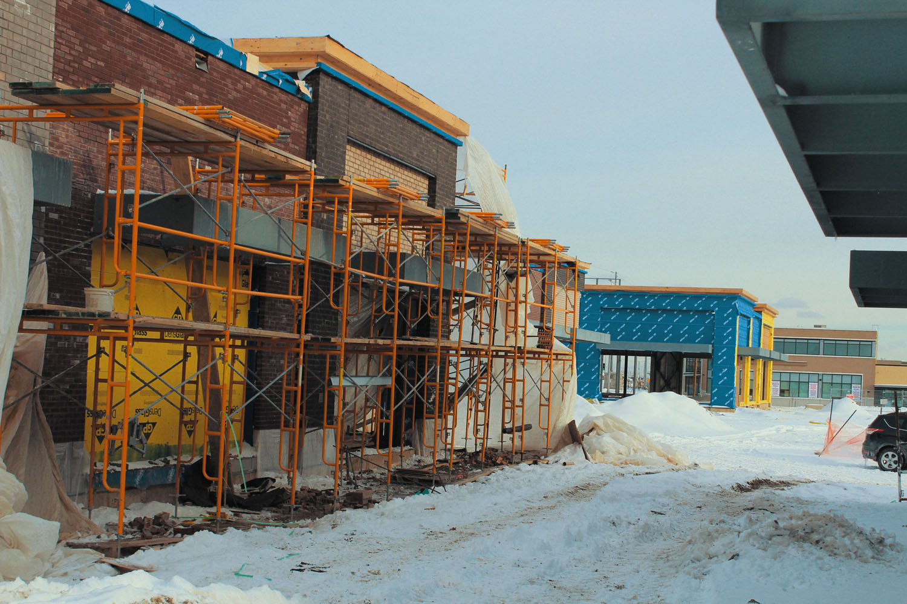
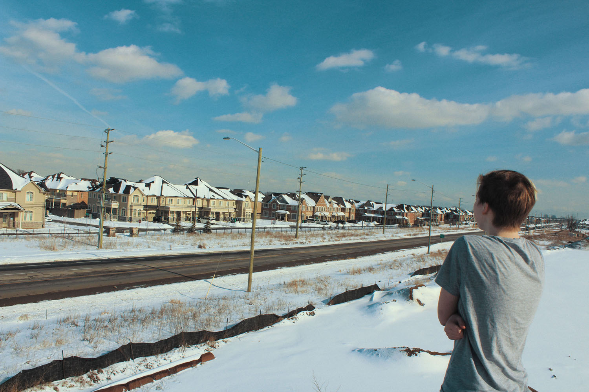

In March of 2019, I conceived “Something About to Happen”, a project that explored and brought awareness to the conditions we subject ourselves to while living in the suburbs, and the significant environmental and social implications of rapidly expanding suburban sprawl.
The book consisted of a short essay, as well as an extensive photographic collection that attempts to communicate the more abstruse emotional impact the suburbs have on its inhabitants. The project has grown to include a website, while the photographic series continues to grow as I refine my thesis.
I developed my thesis for this project through personal research, and also by interviewing members of my neighbourhood. The writing of the essay consisted of a very linear process of researching, interviewing, drafting and editing. The end result was a clean and informative written piece that outlined the problems of the suburbs and posed open-ended questions intended to place the reader in the same head space as someone living within the suburbs.
The book design followed an iterative methodology of countless drafts to reach the final version. The photography, which is perhaps the most powerful part of the project, followed a more exploration based methodology, working first in my house, then my neighbourhood, and then surrounding boroughs as I tried to translate my thoughts into images with as little direction to the models as possible.

 





 


